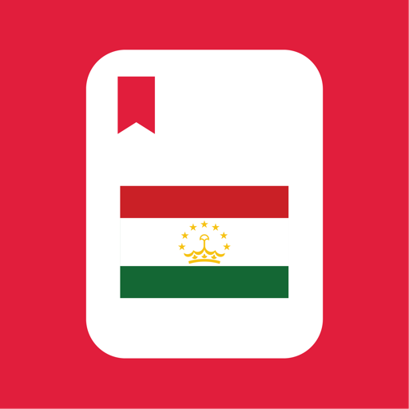
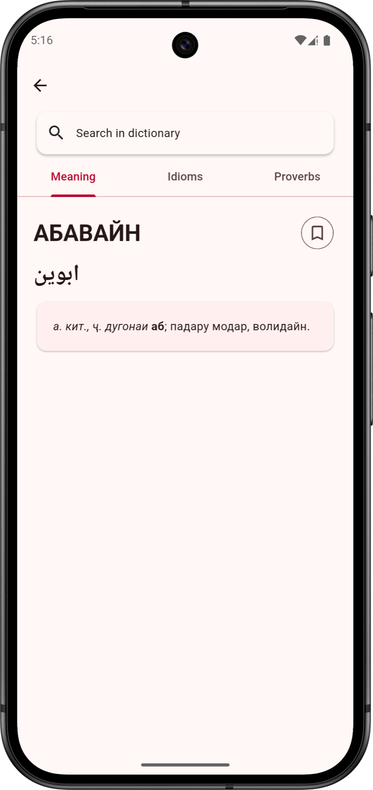
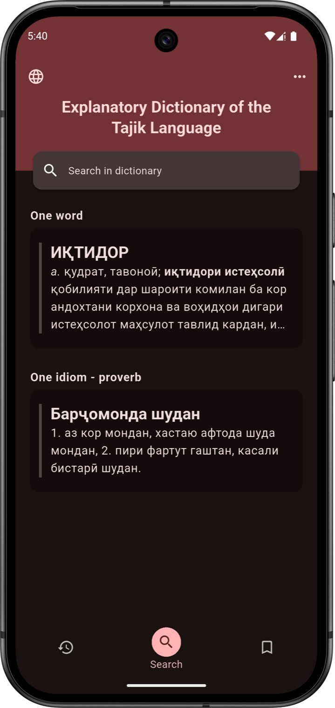

01
80,000+ entries



Education4+Free
Tajik
Dictionary
A rich explanatory dictionary with more than 80,000 Tajik words and phrases, including modern idioms and proverbs.
- 01 Definitions, idioms & proverbs
- 02 Favourites & search history
- 03 A clean multilingual interface